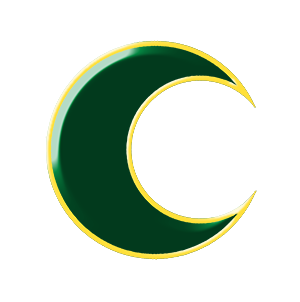
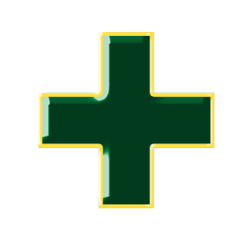
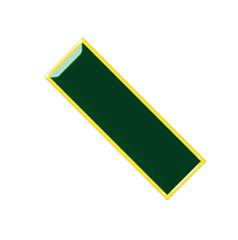
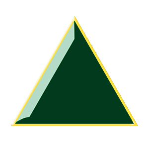
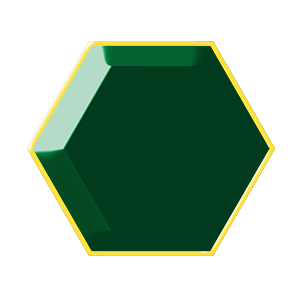
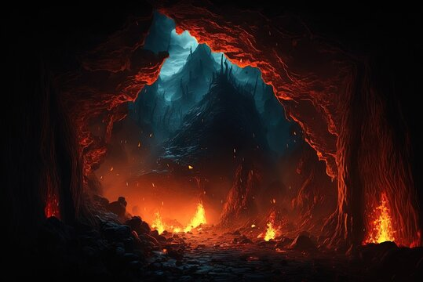

Ongoing Effect: Roll a die at the end of every Mythos Phase while this is in play (Beginning the turn after it entered play). On a 1 or 2, increase the terror level by 1.
Pass: If a player discards 2 gate trophies during the Arkham Encounter Phase while in the Rivertown Streets, return this card to the box. Each player draws 1 Spell.
Fail: If the terror level reaches 10, return the card to the box. Every investigator is Cursed.



